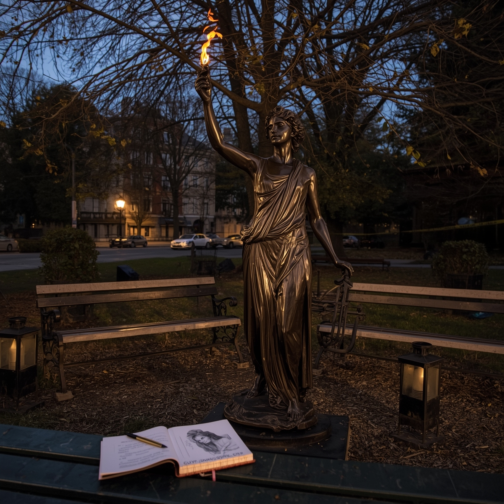
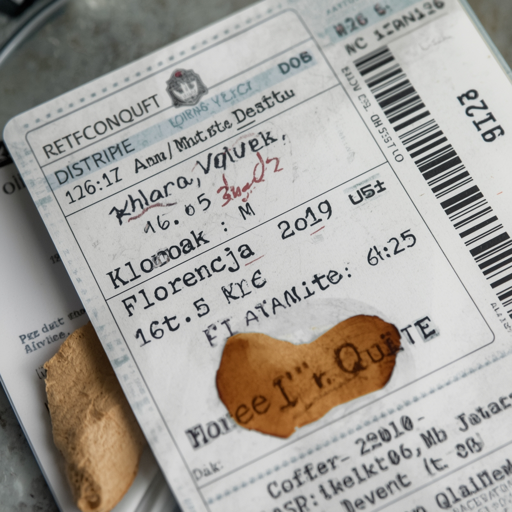
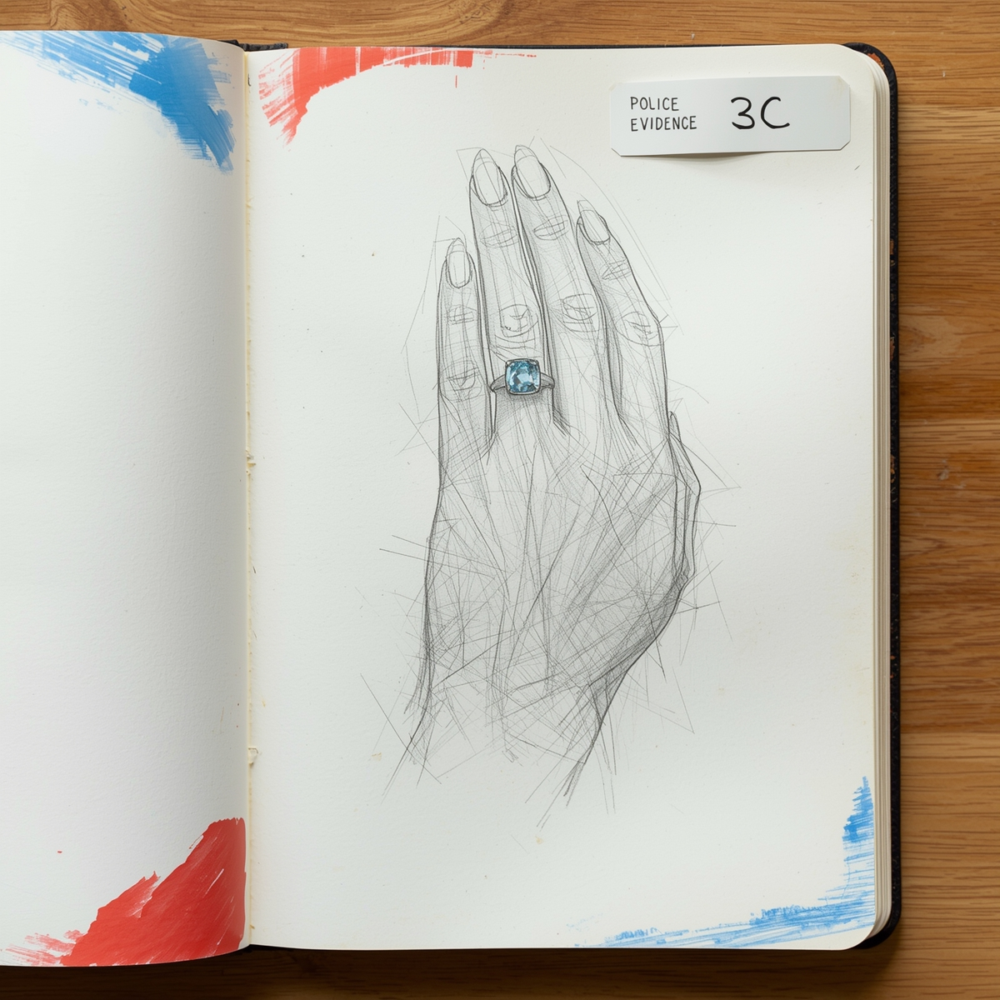

Dane punktu
Lokalizacja:
plac przy ul. Rajskiej, przy rzeźbie „Muza z ogniem”
Czas oględzin:
15.05.2025, godz. 13:00
Funkcjonariusz prowadzący:
asp. A. Sieradzka
Osoba przesłuchana
Klara Rybak – malarka, była asystentka.
Potwierdza spotkanie z Leonem w kawiarni w dniu 14.05.
Twierdzi, że rozmawiali o planowanej wystawie we Włoszech.
Wyszła przed nim, ok. 20:15.
Widziana przez świadka w pobliżu galerii około 21:00 (nie potwierdza tego).
Posiada bilet lotniczy do Florencji (data wylotu – 16.05).
Materiały / dowody zabezpieczone
• Kopia biletu lotniczego (imię i nazwisko Klary Rybak).
• Notatnik szkiców – zawiera rysunek kobiety z pierścionkiem o błękitnym kamieniu.
• SMS z telefonu Leona do Klary: „Nie możemy już się spotykać. Ona wie.”
Załączniki
Fotografia rzeźby „Muza z ogniem” (miejsce spotkań artystów):

Kopia biletu do Florencji:

Strona z notatnika z rysunkiem pierścionka:
